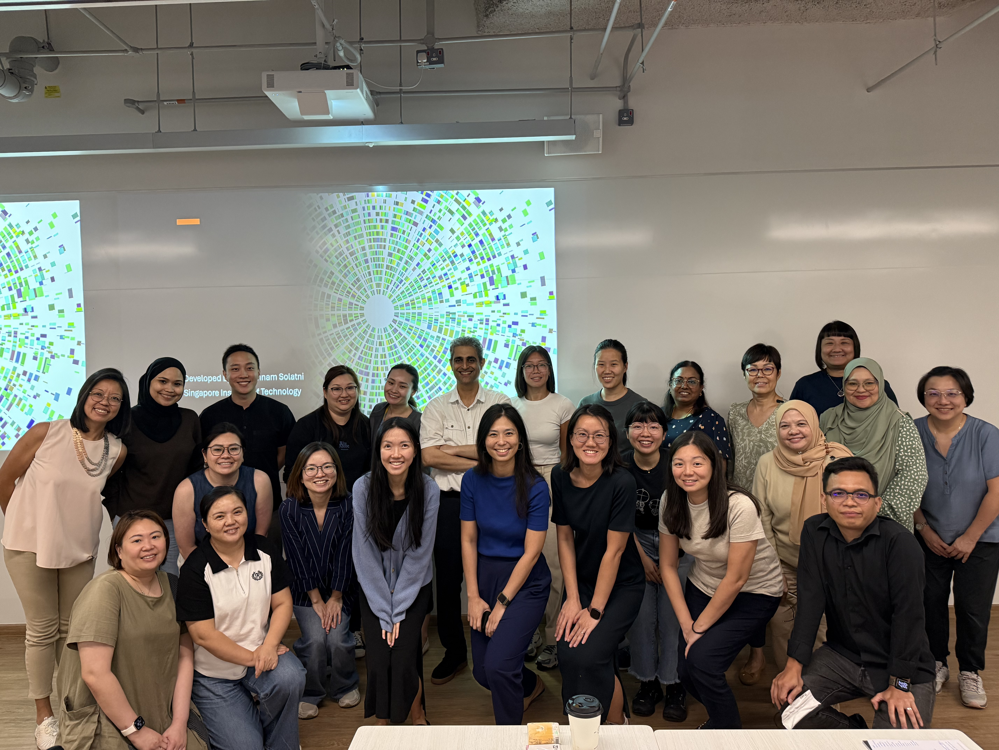
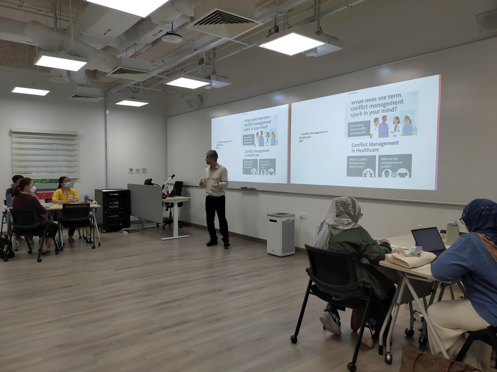
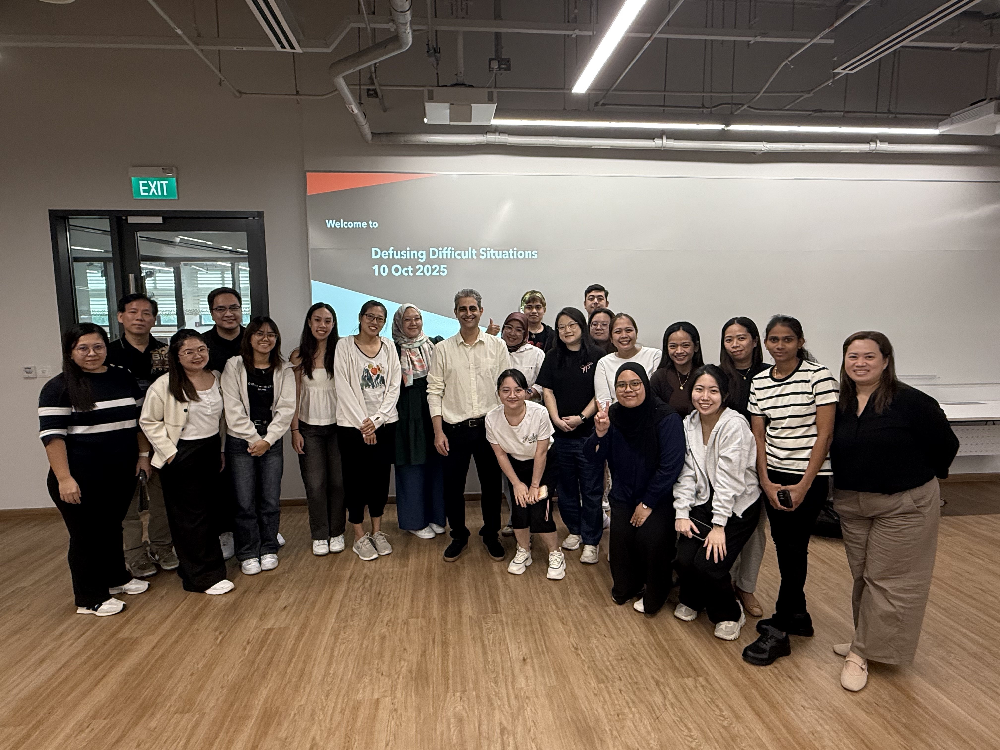

<section id="gallery">
  <div class="wrap">
    <div class="section-head">
      <p class="eyebrow">Workshops in Action</p>
      <h2>Gallery</h2>
      <p style="color:var(--ink-soft);font-size:15px;max-width:56ch;margin-top:14px;">A look at recent workshops, keynotes and training sessions.</p>
    </div>

    <div class="gallery-grid">
      <figure class="gallery-item">
        <div class="photo-frame"></div>
        <figcaption><strong>Changi General Hospital</strong>Defusing Difficult Situations workshop — 19 June 2025</figcaption>
      </figure>
      <figure class="gallery-item">
        <div class="photo-frame"></div>
        <figcaption><strong>Conflict Management in Healthcare</strong>Defusing Difficult Situations session — 22 September 2025</figcaption>
      </figure>
      <figure class="gallery-item">
        <div class="photo-frame"></div>
        <figcaption><strong>Defusing Difficult Situations</strong>Workshop group photo — 10 October 2025</figcaption>
      </figure>
    </div>
  </div>
</section>
